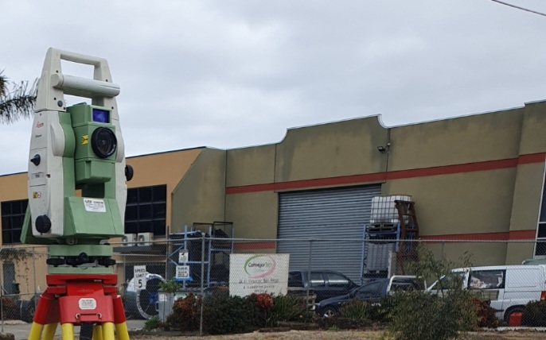
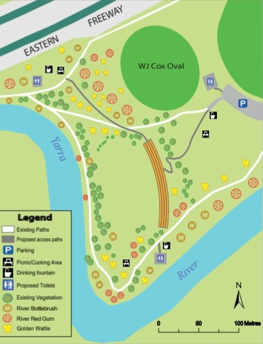
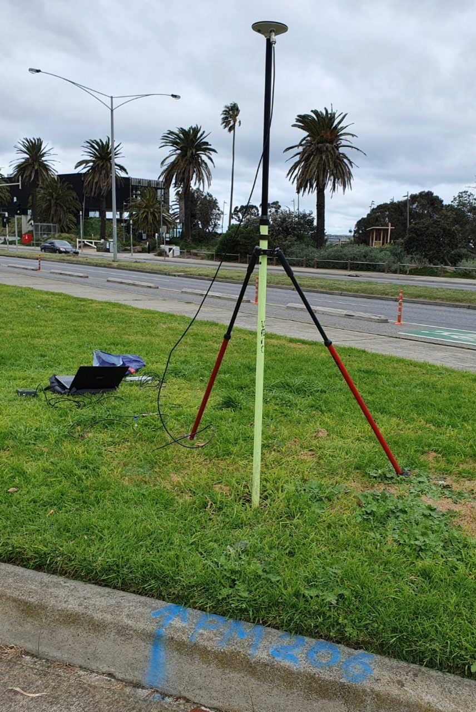
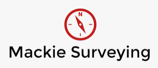

Edward Hill's Geoportfolio
Hello everyone! My name is Edward Hill and I am a 4th year student studying Surveying at RMIT University. I am also working casually as a survey assistant at Mackie
Surveying.
I find surveying interesting because there is a combination of office work and fieldwork, making it a diverse and rewarding career. I enjoy the variety of work that the surveying
industry has to offer and there are not many professions out there that have both outdoors and office work, which makes it one of a kind.
My hobbies include cycling and going on long walks. On this website you can find my portfolio, my resume and my contact information. Do feel free to explore around!
My role as a survey assistant is to collect land measurements and assist project surveyors in various tasks mainly in the Cadastral Surveying field. These tasks include
title-re-establishment surveys, feature and level surveys, subdivisions/as-builts and set-out surveys.

Applied Geospatial Techniques
Applied Geospatial Techniques (AGT) was a practical and interesting subject that I did in my first year at RMIT. It drew upon knowledge from Surveying, Cartography
and Geographic Information Systems (GIS). Our task was to create a proposal of an amphitheatre at Deep Rock Oval located at Yarra Bend Park by using surveying and geospatial CAD programs.

Final Year Project
I am exploring the overall state of technology of scalable GNSS precise positioning services within an open-sky and an urban area, specifically PointPerfect service
compared to SouthPAN PVS service receivers over a permanent survey mark. This project will be presented to industry professionals at RMIT University.

Resume
Experience

Assistant Surveyor
November 2022 - Present
Currently working as an Assistant Surveyor undertaking mainly field tasks at Mackie Surveying.
Title re-establishment, feature and level, as-constructed and set-out surveys.
Built proficiency in using Leica robotic and non-robotic total stations, including Leica GNSS equipment.
Assistant Surveyor
February 2021 - June 2021
Learnt basic skills in fieldwork and office work during my time at Heading & Associates.
Education
Bachelor of Applied Science (Surveying)
2020 - Present
I am currently in my final year and expect to graduate in November 2023. Throughout my studies, I have gained a solid
understanding of survey theory and computations.
Contact Information